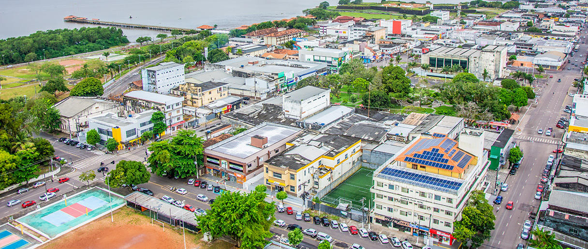

O Amapá é um estado localizado na Região Norte do Brasil, com uma população de cerca de 800 mil habitantes. Sua economia e cultura são bastante influenciadas pela presença de comunidades indígenas e pela sua localização na floresta amazônica. Entre os principais pontos turísticos do estado estão o Parque Nacional do Cabo Orange, conhecido por suas praias e biodiversidade, e a Fortaleza de São José de Macapá, que é um símbolo histórico e oferece uma vista linda do rio Amazonas. Quanto ao governador atual, até outubro de 2023, o governador do Amapá é Waldez Góes.
